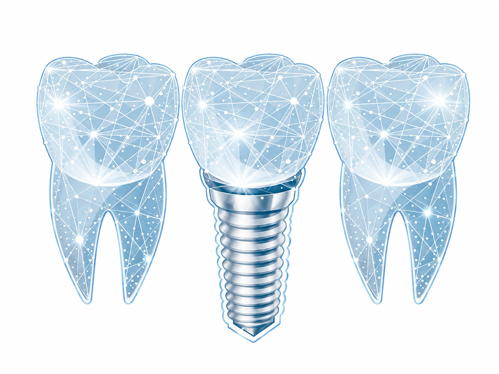

La prothèse dentaire : esthétique, fonction et traçabilité
Pour répondre à la demande croissante d’esthétique dentaire et de biocompatibilité des matériaux, le Dr Benjamin Darmon fait réaliser tous ses travaux au sein d’un des laboratoires de prothèse parisiens les plus renommés. Une fiche de traçabilité est conservée pour chaque réalisation et peut vous être communiquée sur demande.

Prothèse fixe ou prothèse amovible
La prothèse fixe
Scellée, collée ou vissée sur des dents ou des implants, elle rétablit au mieux l’esthétique dentaire, la fonction masticatoire et la phonation, sans nécessiter de dépose quotidienne.
La prothèse amovible
Cet appareillage remplace des dents absentes par un système amovible, à retirer de façon bi-quotidienne pour un bon entretien.
Trois types de prothèse fixe
Prothèse provisoire
Le plus souvent en résine, elle sert à temporiser entre les séances, le temps de la conception du travail définitif par le laboratoire de prothèse.
Prothèse en zircone
De couleur blanche, elle allie esthétique et fonction masticatrice. Sa solidité la recommande pour les dents postérieures ; elle peut être surmontée de céramique pour améliorer le rendu esthétique.
Prothèse céramique
Entièrement composée de céramique, ses qualités esthétiques et sa capacité à être collée à l’émail en font la prothèse privilégiée pour le secteur antérieur.
Un appareillage adapté au nombre de dents absentes
Lors de l’absence de dents, une prothèse amovible partielle ou complète peut être réalisée, entièrement en résine ou à l’aide d’un châssis métallique, qui influence la rigidité et la taille de l’appareil.
Les difficultés de maintien de cette prothèse à la mâchoire inférieure peuvent être résolues par la pose de deux implants dentaires, sur lesquels l’appareil vient se clipser à la manière d’un bouton pression. Voir aussi nos implants dentaires.
Discutons de votre prothèse dentaire
Chaque solution est soumise à un devis détaillé, expliqué avant toute réalisation.